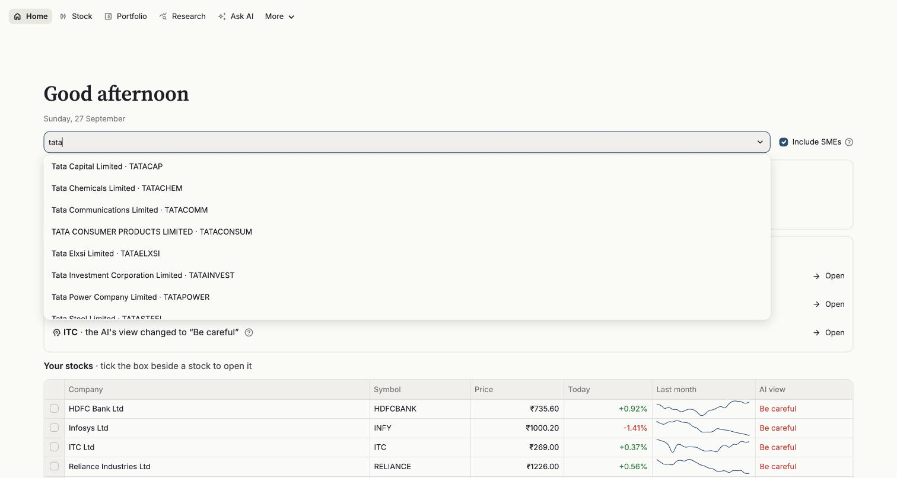
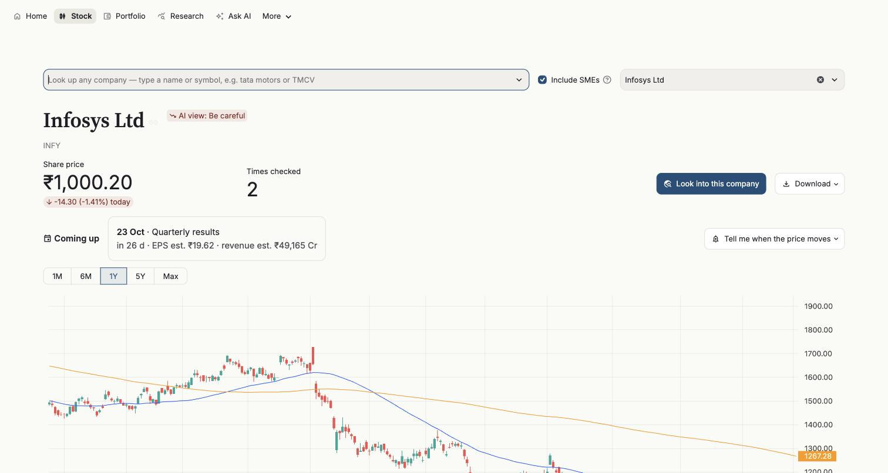
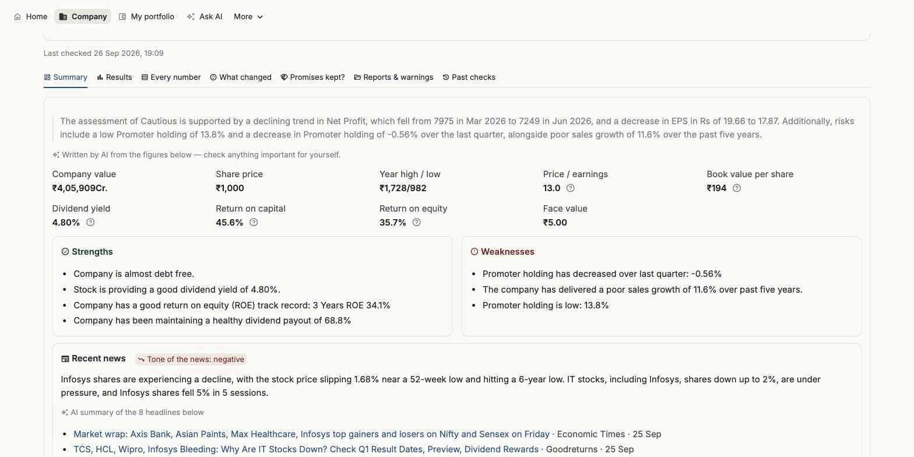
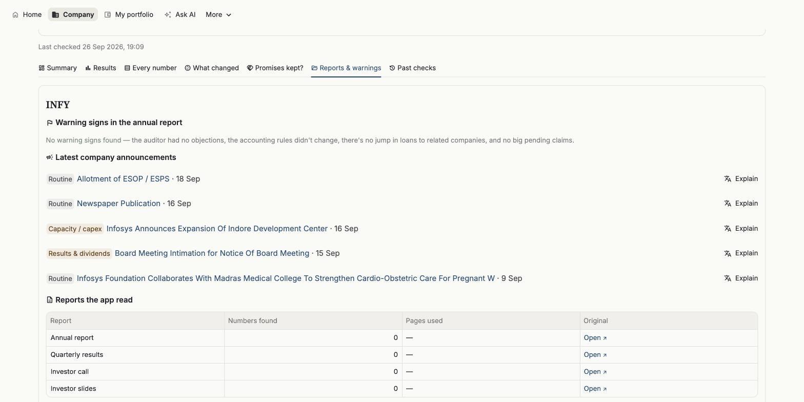
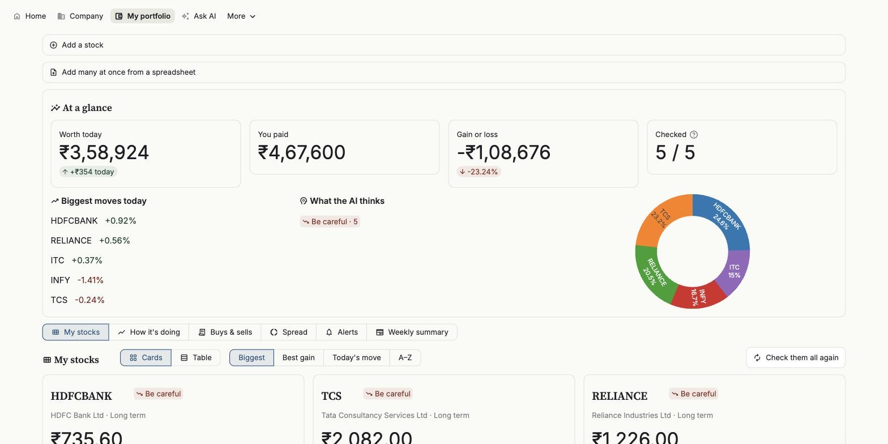
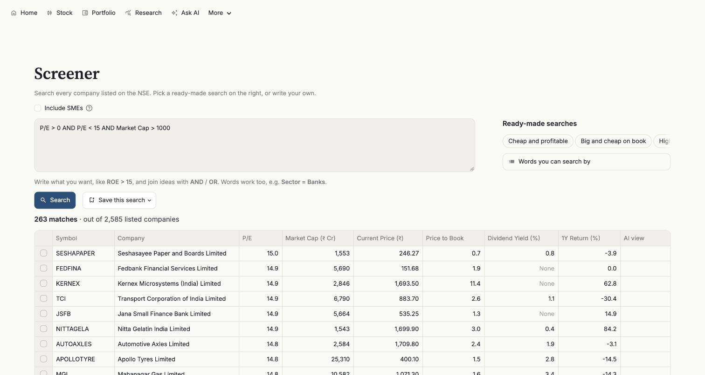
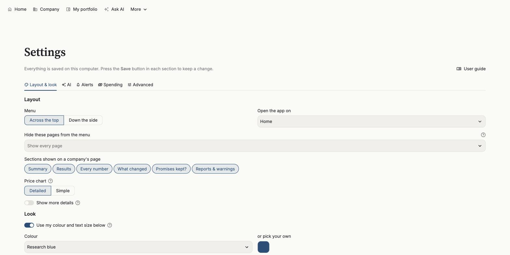

Look up any company listed in India and see, in plain English, how it's doing, what it has promised, and whether anything in its reports should worry you. Free, private, and on your own computer.
You type a company's name. The app gathers everything public about it and lays it out simply.
About 15 minutes, once. The easiest way is to let an AI assistant do it for you.
Copy the message below into an AI assistant that can work on your computer — for example Claude Code, Claude Desktop, ChatGPT's desktop app, Codex or Cursor. It will install everything and tell you when it's ready. A chat-only assistant can't run anything itself, but it will walk you through each step.
Please set up the "Indian Stock Data Hub" app on my computer. I'm not
technical, so do every step yourself where you can, explain anything I
need to do in plain words, and check each step worked before moving on.
1. Check that Python 3.10 or newer is installed (python3 --version, or
python --version on Windows). If not, install it from python.org. On
Windows, tick "Add python.exe to PATH" in the installer.
2. Download the app into my Documents folder:
git clone https://github.com/tapariapurv/indian-stock-data-hub.git
(If git isn't available, download and unzip
https://github.com/tapariapurv/indian-stock-data-hub/archive/refs/heads/main.zip)
3. In the app's folder, make a virtual environment and install the app:
python3 -m venv .venv
then .venv/bin/python -m pip install -r requirements.txt
(Windows: .venv\Scripts\python -m pip install -r requirements.txt)
4. Install Ollama, the free AI, from https://ollama.com/download and make
sure it's running. Download a model that suits my computer's memory:
"ollama pull gemma4:e2b" for 8 GB, "ollama pull gemma4:e4b" for 16 GB
or more.
5. Start the app with .venv/bin/python -m streamlit run app.py
(Windows: .venv\Scripts\python -m streamlit run app.py)
It opens at http://localhost:8501. In the app, go to Settings → AI,
choose Ollama, press "Check it works", pick the model, and press
"Save AI settings".
6. Ask me whether I'd like the app to start by itself when I log in. If
yes, it's in Settings → Advanced → Speed & memory → Start automatically.
7. Finish by telling me, in two or three plain sentences, how to open the
app next time.
Don't edit any of the app's files, and ask me before installing anything
that costs money (nothing here should).python3 -m venv .venv
.venv/bin/python -m pip install -r requirements.txtpython instead of python3, and .venv\Scripts\python instead of .venv/bin/python..venv/bin/python -m streamlit run app.pyEverything works without AI except the summaries, Explain and Ask AI. To turn them on for free:
ollama pull gemma4:e2b (or gemma4:e4b if your computer has 16 GB of memory or more).Where the app opens. Everything you need at a glance.
The first time, Home shows three steps to get started instead.

Everything about one company. Works for any listed company — you don't have to own it.
At the top: the price, what's coming up (results dates, dividends), and a price chart of daily candles (green up, red down) with the 50- and 200-day averages. Below the chart, the app tells you whether the share is cheaper or dearer than usual for this company.
Press Look into this company to have the app read its latest numbers, reports and news (about a minute) — do it again any time to refresh. To keep an eye on it, press Add to my portfolio. To be told when the price moves, press Tell me when the price moves.

| Section | What it shows |
|---|---|
| Summary | The AI's short summary, the key numbers, strengths, weaknesses and recent news. |
| Results | Sales and profit, quarter by quarter, with small trend charts. |
| Every number | Every figure found in the company's reports, with the page it came from. |
| What changed | What's different since the last time the app looked. |
| Promises kept? | What the bosses promised investors, and whether later results show they kept it. |
| Reports & warnings | Warning signs in the annual report, the latest announcements (press Explain for three simple points), and the reports the app read. |
| Past checks | Every earlier look at this company, so you can compare. |


The stocks you own or want to follow.
| Section | What it shows |
|---|---|
| My stocks | A card for each stock: price, trend, the AI's view, and your gain or loss. |
| How it's doing | How your stocks did over the past year, compared with the whole market. |
| Buys & sells | Write down each buy and sell; the app works out your profit and yearly return. |
| Spread | How your money is split across companies and industries, and a warning if too much sits in one. |
| Alerts | Every message the app has sent you. |
| Weekly summary | A one-page round-up of your week. |

The app keeps watch so you don't have to.
In Settings → Alerts, choose how you'd like to hear (a pop-up on your Mac, email, or both) and what about:
Press Send me a test to check it works. The app only sends alerts while it's running — to keep it running in the background, see Start automatically in chapter 8.
Emails are sent from your own Google account, only ever to you.
pick-a-password to any password you like:
const PASSWORD = 'pick-a-password';
function doPost(e) {
const d = JSON.parse(e.postData.contents);
if (d.token !== PASSWORD) return ContentService.createTextOutput('wrong password');
MailApp.sendEmail({to: Session.getEffectiveUser().getEmail(),
subject: d.subject, body: d.text, htmlBody: d.html});
return ContentService.createTextOutput('ok');
}Research and Ask AI are in the main menu; the rest are under More.
| Tool | What it's for |
|---|---|
| Research | Look into several companies at once and download a spreadsheet or Word report. |
| Ask AI | Ask anything in your own words — "Which of my stocks look weakest?" The answer shows where each fact came from. |
| Screener | Search every company listed on the NSE for ones that match what you want. Pick a
ready-made search, like Cheap and profitable, or write one such as P/E < 15 AND Market Cap > 1000.
Tick Include SMEs to add small and medium companies. |
| Compare | Two to four companies side by side; the best on each line is marked in green. |
| Archive | Search every report the app has downloaded, instantly and for free. |
| History | Every earlier check of every company, and how its numbers moved over time. |

Everything is in Settings. Press the Save button in a section to keep a change.
| Section | What you can change |
|---|---|
| Layout & look | Menu across the top or down the side · which page the app opens on · hide pages you don't use · which sections a company's page shows · simple or detailed price chart · colour, text size and spacing · a detailed (candles) or simple price chart · whether to track shares and prices · how often your stocks are re-checked. |
| AI | Which AI to use, or turn it off. |
| Alerts | How and when the app tells you things (chapter 6). |
| Spending | Limits for paid AI services. Free AI is never counted. |
| Advanced | Downloading, storage and backups, speed and memory, and Start automatically when you log in. The defaults work well. |

Want more detail? Turn on Show more details in Layout & look. It adds extra counts and figures, the original financial terms (like ROCE), AI costs and model names, file locations and full error messages.
| What you see | What to do |
|---|---|
| The app won't open | Check the Terminal window is still open. If you closed it, start the app again (chapter 2, step 4). |
| "Couldn't connect" in Settings → AI | Open the Ollama app, then press Check it works again. |
| No AI summary | Turn AI on in Settings → AI. If it's on, try again later or pick a different model. |
| "The search service is busy" | Wait a few seconds and type again. |
| A company "couldn't load" | Check the name, then try again in a minute. |
| The computer feels slow | In Settings → Advanced → Speed & memory, lower the limits. A smaller AI model also helps. |
| Anything else | Paste what you see into any AI assistant along with "I'm using the Indian Stock Data Hub app" — it can usually tell you what to do. |